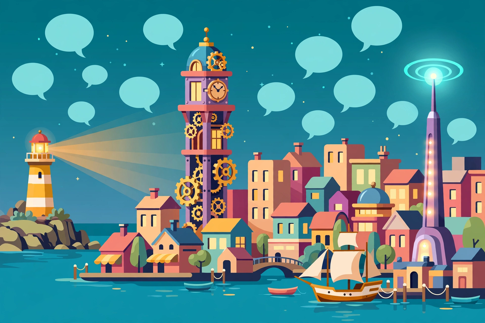

Welcome to Comic City — a lighthouse, a clockwork tower, a signal spire, and eight series of stories waiting on the shelves.
Meet Cappy the Comic Panel, the mascot of this world.
The Signature Comic Store holds 18,549 comic issues across eight series — from THE SIGNALBEARERS to JUNIOR SIGNALS — each issue with its heroes, its powers, and its story.
Two working tools, right here on the page. Each one says what it does and what it cannot do. Neither tool reaches the live web, and neither one needs a key.
Enter a series to count how many of the 500-title sample issues sit in it.
Series:
Picks one real issue from the 500-title sample, from a seed. The same seed always picks the same issue.
Seed:
Designs, printables, and demos — free, downloadable, usable on the page. Every product is labeled Signature or Fun. Nothing here is for sale.
A set of trading cards for the heroes of the eight series, with their powers on the back.
Making: print the printable file on card, cut out the cards, and trade them. Hero names and powers come from the archive records.
A poster of Comic City at dusk: the lighthouse, the clockwork tower, and the signal spire under speech-bubble clouds.
Making: print the printable file and pin it up. The speech bubbles are empty on purpose — fill them in with your own words.
A printable bookmark listing the eight series in reading order, with the first issue of each series.
Making: print the printable file on card, cut out the bookmark, and keep it in the issue you are reading. The series and first issues come from the archive.
Download all product lines as a printable (text)
Cappy once filled in every empty speech bubble in Comic City before breakfast. The lighthouse said good morning, the tower said tick tock, and the signal spire said nothing at all, which was the funniest line of all. (Fun — a made-up tale, not a record.)